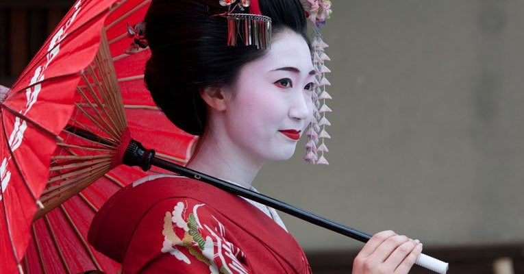

Há alguns anos, Melissa Akemi teve uma ideia que nasceu de suas raízes profundamente enraizadas na culinária japonesa. Crescendo imersa na tradição culinária de sua família, Melissa sempre foi fascinada pela arte de preparar pratos que não apenas alimentavam o corpo, mas também alimentavam a alma.
Determinada a compartilhar essa paixão com o mundo, Melissa reuniu um grupo de amigos igualmente apaixonados por comida japonesa para criar um site que se tornaria uma referência na culinária do Japão. Pedro, um talentoso fotógrafo conhecido por sua capacidade de capturar a beleza dos pratos com uma sensibilidade artística única, foi o primeiro a se juntar ao projeto. Suas fotos não apenas capturavam a estética dos pratos, mas também evocavam a essência da cultura japonesa através de cores e composições cuidadosamente escolhidas.
Yasmin trouxe seu conhecimento profundo das técnicas culinárias japonesas, adquirido através de anos de estudo e prática dedicados. Sua paixão por explorar os detalhes e nuances dos sabores japoneses enriqueceu o site com receitas autênticas e dicas valiosas para replicar pratos tradicionais em qualquer lugar do mundo.
Letícia, com sua habilidade excepcional em contar histórias, desempenhou um papel crucial ao dar vida às receitas no papel. Suas narrativas envolventes não apenas guiavam os leitores através dos passos de cada receita, mas também mergulhavam profundamente nas tradições e histórias por trás de cada prato, conectando os leitores não apenas com a comida, mas com a cultura japonesa.
Ana Sara, a especialista em mídias sociais, trouxe uma abordagem inovadora para divulgar o site. Com sua compreensão profunda das tendências online e habilidades em engajamento digital, ela ajudou a expandir rapidamente a comunidade de seguidores do site, conectando pessoas de todo o mundo que compartilhavam um amor pela culinária japonesa.
Juntos, Melissa, Pedro, Yasmin, Letícia e Ana Sara formaram uma equipe dinâmica e colaborativa, cujo trabalho não apenas promoveu a culinária japonesa, mas também celebrou suas tradições e valores através de cada postagem, foto e interação online. O site não era apenas uma plataforma de receitas, mas um espaço onde a comida servia como uma ponte cultural, unindo pessoas de diferentes origens em torno de uma paixão comum.
À medida que o site crescia em popularidade, seu impacto era sentido não apenas entre os entusiastas da culinária, mas também na preservação e promoção da rica herança culinária japonesa. O sucesso do projeto não apenas validava a visão inicial de Melissa, mas também destacava o poder de uma equipe unida pela paixão e comprometida em compartilhar sua cultura gastronômica com o mundo.